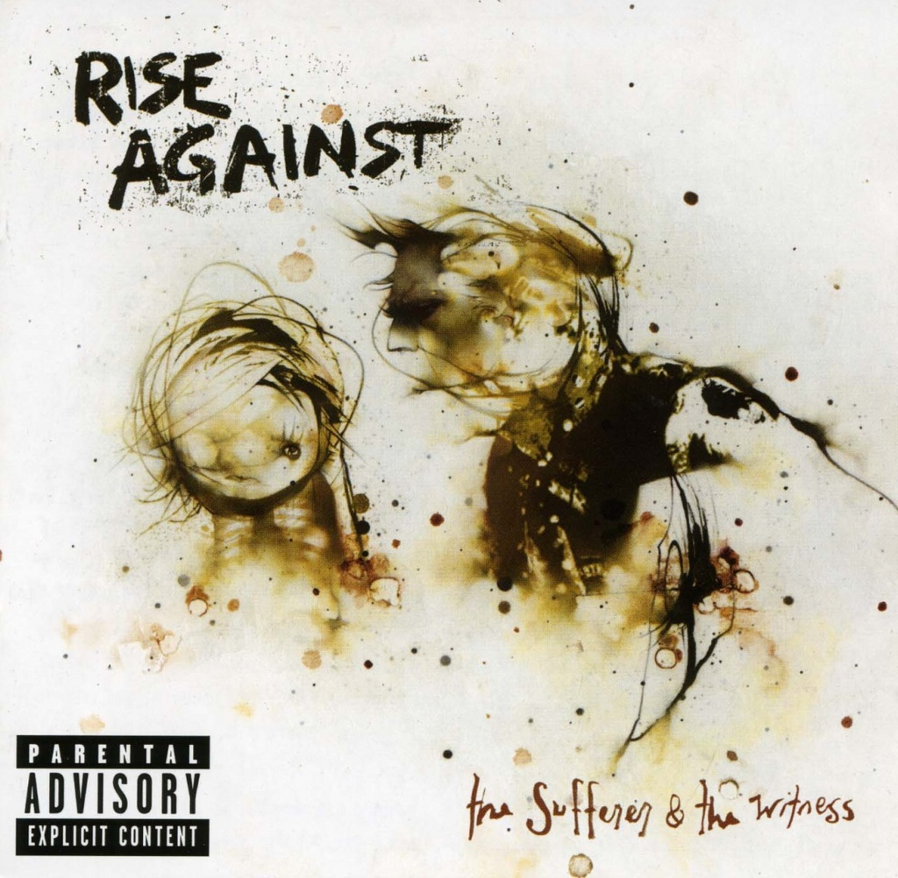

ALBUMS
- The Great One
- I Don't Want To Be Here Anymore
- Tragedy + Time
- The Black Market
- The Eco-Terrorist in Me
- Sudden Life
- A Beautiful Indefference
- Methadone
- Zero Visibility
- Awake Too Long
- People Live Here
- Bridges
hidden text

- Historia Calamitatum
- Death Blossoms
- Elective Amnesia
- Grammatiztor
- Blind
- Everchanging
- Generation Lost
- Dirt And Roses
- Ballad of Hollis Brown
- Slight Unseen
- Lanterns
- Making Christmas
- Join the Ranks
- Built to Last
- Voice of Dissent
- Little Boxes
- Give it All
- Minor Threat
- Obstruction View
- But Tonight We Dance
hidden text

- Historia Calamitatum
- Death Blossoms
- Elective Amnesia
- Grammatiztor
- Blind
- Everchanging
- Generation Lost
- Dirt And Roses
- Ballad of Hollis Brown
- Slight Unseen
- Lanterns
- Making Christmas
- Join the Ranks
- Built to Last
- Voice of Dissent
- Little Boxes
- Give it All
- Minor Threat
- Obstruction View
- But Tonight We Dance
hidden text
- Kotov Syndrome
- Audience of One
- Hairline Fracture
- The Strength To Go On
- Hero of war
- Re-Education
- Whereabouts Uknown
- Dirt Whispers
- From Heads Unworthy
- Long Forgotten Sons
- Savior
- Collapse
- Enterainment
hidden text
- Ready to Fall
- Chamber the Cartridge
- Injection
- Under the Knife
- Prayer of the Refugee
- Drones
- The Approaching Curve
- Worth Dying For
- Behind Closed Doors
- Roadside
- The Good Left Undone
- Survive
hidden text
LYRICS
-Savior-
It kills me not to know this but I've all but just forgotten
What the color of her eyes were and her scars or how she got them
As the telling signs of age rain down a single tear is dropping
Through the valleys of an aging face that this world has forgotten
There is no reconciliation that will put me in my place
And there is no time like the present to drink these draining seconds
But seldom do these words ring true when I'm constantly failing you
Like walls that we just can't break through until we disappear
So tell me now
If this ain't love then how do we get out?
Because I don't know
That's when she said I don't hate you boy
I just want to save you while there's still something left to save (whoa, whoa)
That's when I told her I love you girl
But I'm not the answer for the questions that you still have (whoa, whoa)
But the day pressed on like crushing weights
For no man does it ever wait
Like memories of dying days
That deafen us like hurricanes
Bathed in flames we held the brand
Uncurled the fingers in your hand
Pressed into the flesh like sand
Now do you understand?
So tell me now
If this ain't love then how do we get out?
Because I don't know
That's when she said I don't hate you boy
I just want to save you while there's still something left to save (whoa, whoa)
That's when I told her I love you girl
But I'm not the answer for the questions that you still have (whoa, whoa)
One thousand miles away
There's nothing left to say
But so much left that I don't know
We never had a choice
This world is too much noise
It takes me under
It takes me under once again
I don't hate you
I don't hate you, no
So tell me now
If this ain't love then how do we get out?
Because I don't know
That's when she said I don't hate you boy
I just want to save you while there's still something left to save (whoa, whoa)
That's when I told her I love you girl
But I'm not the answer for the questions that you still have (whoa, whoa)
I don't hate you
I don't hate you (whoa, whoa)
I don't hate you
I don't hate you, no (whoa, whoa)